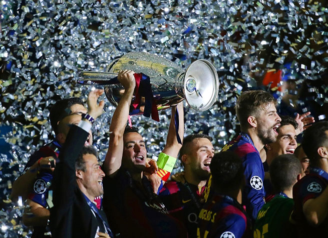

Početna
Istorija
Stadion
Igrači
Ocenite Sajt
Istorija
UEFA Liga šampiona je najjače i najprestižnije evropsko, klupsko fudbalsko takmičenje. Organizovano je od strane UEFE i u njemu učestvuju sve njene članice. Do sezone 1991/92. takmičenje se nazivalo Kup evropskih šampiona. Poznata još kao Kup šampiona ili Evropski kup. Od sezone 1992/93. deo se igra u grupama i menja naziv u UEFA Liga šampiona.
Takmičenja
Broj titula
Prvak Španije
24
Španski kup kralja
29
Super kup Španije
12
Liga Šampiona
5
Kup pobednika kupova
4
Kup sajamskih gradova
3
Superkup Evrope
5
